114 年國中教育會考國文試題與答案
這一頁是民國 114 年國中教育會考國文的整份歷屆試題，共 42 題，題目與標準答案出自心測中心 會考歷屆試題（依著作權法 §9，考試試題不受著作權保護），其中 42 題附有詳解。以下逐題列出題幹、選項與答案；要計時作答或記錄成績，請用線上練習。
線上作答這一科 →
全部 42 題
第 1 題
根據資料，右側詐騙簡訊使用了哪一種話術？
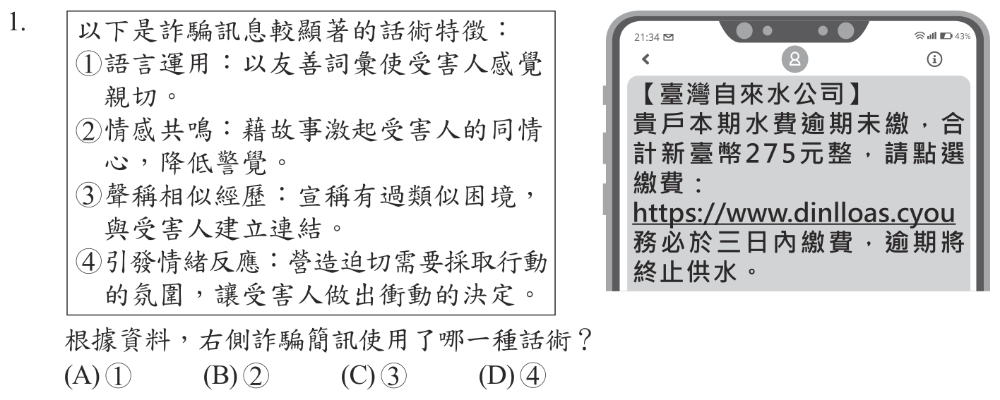
本題選項為上圖中的 A／B／C／D，請對照圖片作答。
答案：（D）
詳解與考點
正解：簡訊中的「逾期未繳」、「三日內繳費」與「逾期將終止供水」連續設定期限和後果，關鍵是以急迫感逼收訊者立刻行動。這符合特徵④「引發情緒反應、營造迫切採取行動的氛圍」，D 為正解。
A：簡訊沒有用親切友善的語氣建立關係，而是以終止供水施加壓力。
B：簡訊沒有編造值得同情的個人故事。
C：簡訊沒有宣稱與收訊者有相似經歷或身分。
本題考點：詐騙話術辨識——看到限期、罰則或重大損失時，先辨識其是否藉急迫感催促行動；訊息比對——依簡訊實際用語判斷話術類型，不把未出現的情節或關係套入。
第 2 題
「清代驗屍跟現代不同，驗屍一定是在『屍所』，即屍體所在之處，可能是案發現場，也可能是陳屍處。清代的程序非常強調在屍所驗屍，禁止將屍體帶到他處檢驗。同時十分強調涉案人、關係人和家屬必須在場，一般大眾也可以圍觀。目的在於使驗屍過程中，關於屍傷屍狀的觀察都能夠『公同一干人眾，質對明白』。」若要拍攝清代刑案電視劇，下列情節何者最符合本文的敘述？
- （A）將屍體從案發現場帶至衙門驗屍
- （B）官府開始驗屍時，家屬必須到場
- （C）驗屍時將一干閒雜人等驅離現場
- （D）家屬要求確認結果，被斷然拒絕
答案：（B）
詳解與考點
正解：題幹要求依文本安排清代驗屍情節，關鍵條件是涉案人、關係人和家屬必須在場。B 符合家屬必須到場的敘述，故 B 為正解。
A：文本明說禁止把屍體帶到他處檢驗，將屍體帶往衙門驗屍不合，錯誤。
C：文本說一般大眾也可以圍觀，不能把一干人等驅離，錯誤。
D：驗屍目的在「公同一干人眾，質對明白」，家屬並非被斷然拒絕，錯誤。
本題考點：文本細節推論——影視情節須逐項符合原文的流程條件；清代驗屍判準——在屍所驗屍、家屬等關係人到場，並容許眾人共同質對。
第 3 題
根據下表中的字形，何者的造字原則與「月」字相同？
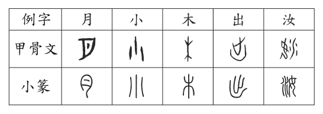
- （A）小
- （B）木
- （C）出
- （D）汝
答案：（B）
詳解與考點
正解：題幹問「月」字的造字原則；「月」是摹寫彎月形狀的象形字，應找同樣以字形描摹事物的字。B「木」畫出樹幹、枝與根，屬象形，故 B 為正解。
A：「小」以三點表示細微，屬指事，不是描摹具體物象。
C：「出」由「止」離開「凵」組成，表外出之意，屬會意。
D：「汝」從水、女聲，以「女」表音，屬形聲。
本題考點：六書造字——象形以字形摹寫事物外貌，如「月」、「木」；指事以符號標示抽象概念，如「小」；會意合併部件取義，形聲則一部分表義、一部分表音。
第 4 題
關於右側這首詩的解讀，下列何者最恰當？
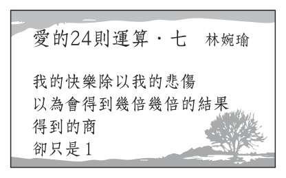
- （A）悲傷會過去，快樂會留下
- （B）我的快樂等同於我的悲傷
- （C）除了悲傷之外，我一無所有
- （D）每個人的愛情都只有一種結果
答案：（B）
詳解與考點
正解：詩句以「快樂除以悲傷」的數學意象說明結果為 1。被除數除以除數等於 1，表示兩者相等，所以快樂與悲傷分量相等，B 正確。
A：詩句沒有說悲傷會消失、快樂會留下。
C：結果為 1 表示悲傷與快樂相等，不是只有悲傷。
D：詩寫的是「我」的感受，不能推成每個人的愛情都只有一種結果。
本題考點：詩歌意象解讀——數學語言在詩中可轉化為情感關係；當「快樂÷悲傷＝1」時，判準是兩者相等，不可擴大成悲喜消長或普遍結論。
第 5 題
東漢許慎《說文解字》收錄的字體以小篆為主，兼採秦以前的古文字與籀文。下列四個不同字體的「封」字，何者不會收錄在其中？
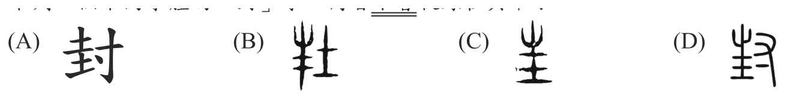
本題選項為上圖中的 A／B／C／D，請對照圖片作答。
答案：（A）
詳解與考點
正解：《說文解字》的收錄範圍：以小篆為主，兼採秦以前古文與籀文，不收秦漢以後形成的隸書、楷書。A 的「封」筆畫平直方正，為後起的楷書字形，故不會收錄。
B：屬篆籀古文字形，符合兼採古文、籀文的範圍。
C：屬篆籀古文字形，符合收錄範圍。
D：屬篆籀古文字形，符合收錄範圍。
本題考點：字體演變——《說文解字》以小篆為主並收秦以前古文字、籀文；辨認收錄與否時，以字體時代為判準，筆畫方正的楷書屬後起字體。
第 6 題
根據以上資料，下列推論何者最恰當？
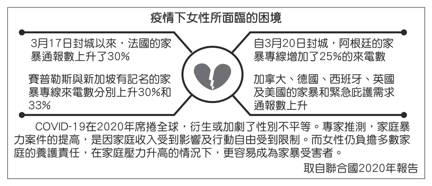
- （A）因疫情而封城，易誘發潛在的家庭暴力
- （B）疫情期間女性受家暴後通報的意願較高
- （C）家庭壓力上升造成女性收入與行動受限
- （D）過度關注疫情，導致政府漠視性別平權
答案：（A）
詳解與考點
正解：依題組資料作推論。資料呈現疫情封城期間家庭暴力通報量上升，結合封城限制人員自由流動、家庭成員長時間相處，可推知封城較易誘發潛在家庭暴力，A 最恰當。
B：通報量上升不能直接等同於女性通報意願較高；封城期間也可能因難以外出而降低通報。
C：資料不能推出家庭壓力直接造成女性收入與行動受限，且將家暴誘因與結果混為一談。
D：資料沒有政府漠視性別平權的資訊，屬過度推論。
本題考點：圖表資料推論——由趨勢推論時，結論須不超出資料與題幹條件；通報量、通報意願及政府態度是不同層次，不能互相直接替代。
第 7 題
根據甲、乙二圖，下列敘述何者最恰當？
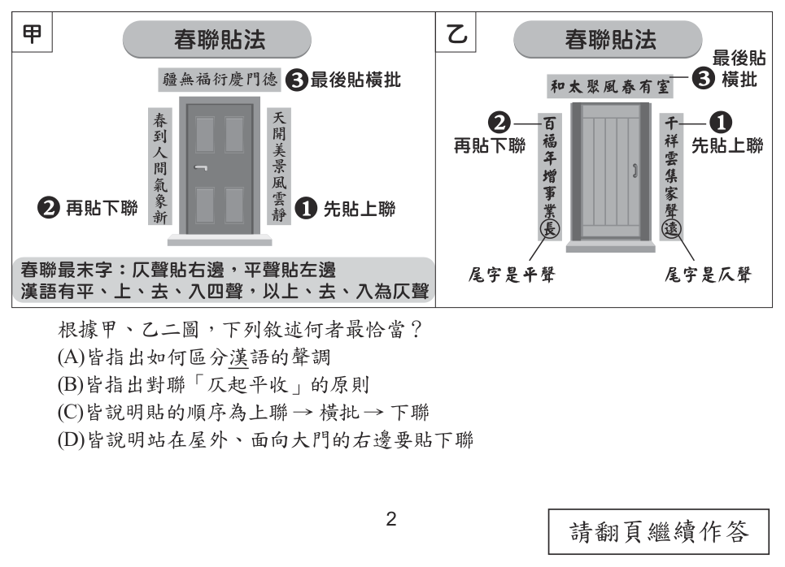
- （A）皆指出如何區分漢語的聲調
- （B）皆指出對聯「仄起平收」的原則
- （C）皆說明貼的順序為上聯 → 橫批 → 下聯
- （D）皆說明站在屋外、面向大門的右邊要貼下聯
答案：（B）
詳解與考點
正解：甲、乙二圖共同說明的內容。兩圖都指出對聯應「仄起平收」，即上聯末字為仄聲、下聯末字為平聲，故 B 正確。
A：圖表主題是對聯規則，不是區分漢語聲調的方法。
C：兩圖共同資訊不是上聯、橫批、下聯的張貼順序。
D：兩圖共同資訊不是站在屋外面向大門時下聯的張貼方位。
本題考點：圖表訊息整合——找共同敘述時，要逐項比對兩圖都有的規則；對聯判斷可用「仄起平收」：上聯末字仄聲，下聯末字平聲。
第 8 題
貫雲石〈小梁州〉秋芙蓉映水菊花黃，滿目秋光。枯荷葉底鷺鷥藏。金風盪，飄動桂枝香。雷峰塔畔登高望，見錢塘一派長江。湖水清，江潮漾。天邊斜月，新雁兩三行。關於這首曲的分析，下列何者最恰當？
- （A）題目為〈小梁州〉，是散曲中的小令
- （B）在曲作的中間換韻，不是一韻到底
- （C）以「菊花」、「金風」、「桂枝」呼應「秋」
- （D）以「斜月」、「新雁」象徵世間繁華轉眼成空
答案：（C）
詳解與考點
正解：哪些意象共同呼應「秋」。「菊花」是秋花，「金風」指秋風，「桂枝香」寫秋桂香氣，三者都營造秋日景象，故 C 正確。
A：「小梁州」是散曲的曲牌名稱，不能只憑題目便判定作品一定是小令。
B：全曲韻腳一致，沒有在中間換韻。
D：「斜月」、「新雁」渲染秋夜清冷、離愁的氛圍，並未象徵世間繁華轉眼成空。
本題考點：散曲意象分析——曲牌名不等於作品體式；判讀景物時，將菊花、金風、桂香等同類季節意象連結，可確認其共同烘托秋景。
第 9 題
中式花茶依加工方式，可分為三種：第一種是成品內沒有花但香氣濃郁的茶，如茉莉花茶；第二種是成品內有花的茶，如玫瑰烏龍茶；第三種是純花茶，成品內沒有茶葉，如菊花茶、蓮花茶等。其中第一種等級最高，又稱「香片」。香片是將乾燥後的茶葉與新鮮的香花依比例混合，靜置陰涼處，等茶葉吸收花的香氣後將花篩除，再烘乾製成。根據本文，下列花茶店店員針對顧客需求所給的建議，何者不恰當？
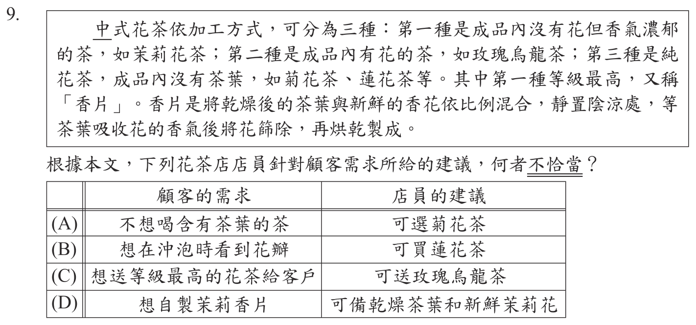
本題選項為上圖中的 A／B／C／D，請對照圖片作答。
答案：（C）
詳解與考點
正解：依加工方式與等級對應顧客需求。第一種花茶成品無花、香氣濃郁，稱「香片」且等級最高；玫瑰烏龍茶是成品有花的第二種。C 若要送最高等級花茶卻推薦玫瑰烏龍茶，不恰當。
A：純花茶的成品沒有茶葉，符合本文第三種的分類。
B：蓮花茶屬成品沒有茶葉的純花茶，符合第三種。
D：自製香片要將乾燥茶葉與新鮮香花混合、靜置，待茶葉吸香後篩除花再烘乾，備料方向正確。
本題考點：說明文分類——先以成品是否有花、是否有茶葉區分三種花茶，再以「香片」為第一種且等級最高作為配對判準。
第 10 題
「蜂造之蜜出山崖、土穴者十居其八，而人家招蜂造釀而割取者，十居其二也。北方乾燥，土穴所釀多出於此。南方卑溼，故有崖蜜而無穴蜜。西北半天下，蓋與蔗漿分勝云。」根據本文，下列推論何者最恰當？
- （A）穴蜜多產於乾燥之處
- （B）崖蜜多為人工養育而來
- （C）卑溼之地沒有天然的蜂造之蜜
- （D）西北蜂蜜產量是東南蔗漿的一半
答案：（A）
詳解與考點
正解：題幹要求依本文推論，關鍵句「北方乾燥，土穴所釀多出於此」直接指出穴蜜多產於乾燥地區，故 A 為正解。
B：文中說人家招蜂造釀者只占十居其二，崖蜜不是多為人工養育而來，故錯誤。
C：南方卑溼之地「有崖蜜而無穴蜜」，並非沒有天然蜂蜜，故錯誤。
D：「蓋與蔗漿分勝」是比較各自優勢，未說西北蜂蜜產量為東南蔗漿的一半，故錯誤。
本題考點：文言文推論——依原文明示的因果與數量判斷；判準——不可把「無穴蜜」擴大成無蜂蜜，也不可將比較優勢誤讀為比例。
第 11 題
「旅行回來，一篇遊記常要寫上許久，有的終究沒寫成。有時不知怎麼濃縮剪裁，最後只是一片凌亂的札記和草稿。那些沒寫出來的，只好留待時間去處理了。時間如果不是個偉大的作者，起碼是個傑出的編輯。也許它最後會告訴我：不寫也罷！」根據文意脈絡，關於畫線處文句的解讀，下列何者最恰當？
- （A）真正優秀的作品，經得起時間的考驗
- （B）要寫出一篇好遊記，作者比編輯更重要
- （C）成為傑出的編輯，需要時間與經驗的累積
- （D）經過時間的沉澱，自然能釐清值得寫的是什麼
答案：（D）
詳解與考點
正解：畫線句把時間比作傑出的編輯，觸發的是比喻中的篩選與沉澱作用。旅行材料經時間處理後，作者能釐清哪些值得寫、哪些不寫也罷，故 D 為正解。
A：文意不是說優秀作品能否經得起時間考驗，而是時間幫作者整理材料，錯誤。
B：文中沒有比較作者與編輯何者較重要，錯誤。
C：文中的「編輯」是時間的比喻，不是說人成為編輯須累積時間與經驗，錯誤。
本題考點：語境推論與修辭解讀——比喻須連結前後文理解喻意；「時間是編輯」判準——時間沉澱後能篩選、剪裁經驗，而非討論作品耐久性或職業養成。
第 12 題
「我的本行是科學而非文學甲甲也許這正是我的缺失乙乙也許這反而是我的長處，無論如何我清楚明白丙丙科學需要人文的關懷丁丁而文學需要理性的自覺。」根據文意脈絡，甲乙丙丁四處，何者最適合填入標點符號中的冒號？
- （A）甲
- （B）乙
- （C）丙
- （D）丁
答案：（C）
詳解與考點
正解：冒號用於提示下文是前文的解釋、說明或分述；「我清楚明白」後面接「科學需要人文的關懷，而文學需要理性的自覺」兩項內容，丙處最適合用冒號引出，故 C 為正解。
A：甲處前後是「本行是科學而非文學」與可能的自我評價，並非下文分述前文，錯誤。
B：乙處連接兩個相對的推測，不是引出說明，錯誤。
D：丁處位於「科學需要人文關懷」與「文學需要理性自覺」兩個並列分句之間，不宜用冒號，錯誤。
本題考點：冒號用法——前文若總提、後文若分述或說明，兩者之間可用冒號；並列判準——兩個地位相當的分句之間，應依語氣用逗號或分號，不以冒號連接。
第 13 題
下列文句中的語詞，何者使用最恰當？
- （A）他奮力救人的義舉，淪為一段佳話
- （B）我如此盡心，既然得到這樣的待遇
- （C）此建案已延宕多時，如今終於竣工
- （D）那件事能夠完成，不愧有你的幫忙
答案：（C）
詳解與考點
正解：題幹要判斷語詞是否合乎詞義與語境。C 的「延宕」指拖延、耽誤，「竣工」指工程完成，前後語意連貫，故 C 為正解。
A：「淪為」含有由好變壞的貶義；救人的義舉成為佳話是褒義情境，應用「傳為」，錯誤。
B：「既然」用於已成立的原因，後面通常接相應結果；此處要表意外的待遇，應用「竟然」，錯誤。
D：「不愧」用於肯定、稱讚，不能接在「有你的幫忙」前表示事情得以完成，句義不通，錯誤。
本題考點：詞語運用——須同時檢查詞義、感情色彩與句間邏輯；「淪為」帶貶義、「既然」表既定因果、「不愧」表稱許，皆須依語境選用。
第 14 題
下列文句「」中的字，何者讀音正確？
- （A）有些玩笑話沒拿捏好分寸，就可能變成「揶」揄：ㄧㄝˊ
- （B）這家賣場備有各種「晾」晒工具，提供消費者選購：ㄐㄧㄥ
- （C）這齣音樂劇結合不同族群的元素，打破文化的「藩」籬：ㄆㄢ
- （D）原以為勝券在握，卻因一時疏忽，竟從雲端「栽」了下來：ㄘㄞˊ
答案：（A）
詳解與考點
正解：題幹要選出引號中字讀音正確的選項，須逐字核對教育部標準讀音。A 的「揶」讀ㄧㄝˊ，「揶揄」指嘲弄、戲弄，讀音標示正確，故 A 為正解。
B：曬工具的「晾」讀ㄌㄧㄤˋ，指把東西攤開透氣、風乾，題目標為ㄐㄧㄥ，錯誤。
C：文化藩籬的「藩」讀ㄈㄢ，指屏障、界限；它看起來對，是因為下半部「潘」是聲符，容易誤讀成ㄆㄢ，但題目標音錯誤。
D：從雲端「栽」下來的「栽」讀ㄗㄞ一聲，指跌倒、摔落，題目標為ㄘㄞˊ，錯誤。
本題考點：字音辨識——以教育部標準讀音為準；形聲字判斷——聲符只提供提示，不保證同音，「藩」讀ㄈㄢ非ㄆㄢ、「晾」讀ㄌㄧㄤˋ非ㄐㄧㄥ、「栽」讀ㄗㄞ非ㄘㄞˊ。
第 15 題
蒲松齡《聊齋志異》共492篇，包括兩種作品：一是幾百字甚至幾十字的奇聞逸事，另一是長達數千言的故事，是真正的短篇小說，兩種作品各占一半。《聊齋志異》真正的短篇小說能從前人作品找到「本事」（原型）的約百篇，意即近二分之一的篇章不是作者獨創，而是改寫前人作品。魯迅說此書「亦頗有從唐傳奇轉化而出者」。關於文中《聊齋志異》的說明，下列何者最恰當？
- （A）有些唐傳奇故事是蒲松齡寫作的來源
- （B）找不到原型的篇章數不及全書的一半
- （C）全書能找到原型的作品大多是奇聞逸事
- （D）書中的短篇小說篇幅僅幾百甚至幾十字
答案：（A）
詳解與考點
正解：文中說《聊齋志異》真正的短篇小說中，約百篇可找到前人作品的「本事」，又引魯迅所言「亦頗有從唐傳奇轉化而出者」。可知有些唐傳奇故事是蒲松齡寫作的來源，故 A 為正解。
B：真正短篇小說約占全書一半，約百篇有原型；找不到原型的篇章並非不及全書一半，錯誤。
C：文中能找到原型的約百篇指真正的短篇小說，未說大多是奇聞逸事，錯誤。
D：幾百字甚至幾十字的是奇聞逸事；真正短篇小說可長達數千言，錯誤。
本題考點：說明文訊息理解——以原文的數量、分類與因果敘述核對選項；指涉判準——「本事」指前人作品的原型，引用唐傳奇可支持「部分作品有其來源」，不可擴大成全書皆然。
第 16 題
下列文句，何者用字完全正確？
- （A）所謂有志竟成，努力必能得到回報
- （B）得饒人處且饒人，你何必趕進殺絕
- （C）想到他的處境，我情不自盡地落淚
- （D）眼不見為靜，把雜物塞進櫃子就好
答案：（A）
詳解與考點
正解：題幹要求用字完全正確，須逐一核對固定語詞。A 的「有志竟成」指有志向的人終能成功，「竟」字正確，故 A 為正解。
B：「趕進殺絕」應為「趕盡殺絕」；「盡」指全、完，不可寫成「進」，錯誤。
C：「情不自盡」應為「情不自禁」；「禁」指控制、禁制，不可寫成「盡」，錯誤。
D：「眼不見為靜」應為「眼不見為淨」；「淨」指乾淨，不可寫成「靜」，錯誤。
本題考點：別字辨識——固定成語與慣用語須依詞義核對正字；形近字判準——「盡／禁」與「靜／淨」字形相近，但要由語義判別。
第 17 題
祖可〈小重山〉﹕「誰向江頭遺恨濃？碧波流不斷，楚山重。柳煙和雨隔疏鐘。黃昏後，羅幕更朦朧。 桃李小園空。阿誰1猶笑語，拾殘紅。珠簾捲盡夜來風。人不見，春在綠蕪中。」關於這闋詞的分析，下列何者最恰當？
- （A）上片押平聲韻，下片轉押仄聲韻
- （B）上片寫景抒情，下片敘事兼論理
- （C）「碧波流不斷」將「遺恨濃」具體化
- （D）藉由「綠蕪」來反襯「桃李」的豔冶
答案：（C）
詳解與考點
正解：題幹要分析詞句的表現手法；「碧波流不斷」以不斷流動的江水呈現「遺恨濃」的綿延無盡，把抽象情感轉為可見景象，故 C 為正解。
A：上下片都押平聲韻，沒有下片轉押仄聲韻，錯誤。
B：下片寫小園空、拾殘紅、夜來風等景象與情感，沒有論理，錯誤。
D：「綠蕪」呈現桃李凋零後的景象，不是用來反襯桃李的豔冶，錯誤。
本題考點：詞的手法分析——景物若承載、外化情感，可判為借景抒情或化虛為實；判讀時須分清寫景、敘事與論理，並以詞句實際內容為準。
第 18 題
皎然〈尋陸鴻漸不遇〉：「移家雖帶郭，野徑入桑麻。近種籬邊菊，秋來未著花。扣門無犬吠，欲去問西家。報道山中去，歸來每日斜。」根據本詩，作者此次訪友之行曾看見下列何者？
- （A）荒蕪的農地
- （B）盛開的菊花
- （C）歸來的鴻漸
- （D）鴻漸的鄰居
答案：（D）
詳解與考點
正解：題幹問作者訪友時「曾看見」何者，須以詩中實際行動判斷。「欲去問西家」後接「報道山中去」，表示作者見到並詢問鴻漸的鄰居，故 D 為正解。
A：「野徑入桑麻」寫鄉野農地與桑麻作物，不能推成荒蕪農地，錯誤。
B：「秋來未著花」明說籬邊菊尚未開花，錯誤。
C：詩題為「不遇」，且鄰居說鴻漸上山去了，作者未見到鴻漸，錯誤。
本題考點：詩歌細節理解——問看見何物時，須找詩句中的明示證據；否定判準——「未著花」「不遇」都是排除選項的重要訊號。
第 19 題
下列文句中的詞語，何者使用最恰當？
- （A）這部電影的戰爭場面逼真，其慘烈不可名狀
- （B）他表面上雖然毫不在乎，但心裡卻不以為意
- （C）他的心情不言而喻，大家都不知他是喜是怒
- （D）長官對此事不置可否，讓下屬有明確的方向太祖以事責丞相李善長，劉基言：「善長勛舊，能調和諸將。」太祖曰：「是數欲害汝，汝竟為之言耶？吾將相汝矣。」基頓首曰：「是如易柱，須得大木。若束小木為之，且立覆。」關於文中人物的敘述，下列何者最恰當？
答案：（A）
詳解與考點
正解：題幹要判斷詞語與上下文語意是否相符。A 的「不可名狀」指難以用語言形容，用來形容電影戰爭場面極其慘烈，使用恰當，故 A 為正解。
B：「不以為意」就是不放在心上，與「表面上毫不在乎」語意重複，不能形成轉折，故錯誤。
C：「不言而喻」指顯而易見，與「大家都不知他是喜是怒」相互矛盾，故錯誤。
D：「不置可否」指不表示贊成或反對，不能使下屬獲得明確方向，故錯誤。
本題考點：詞語運用——詞義須與前後語境一致；判準——檢查詞語本義是否造成重複、轉折失效或前後矛盾。
第 20 題
關於文中人物的敘述，下列何者最恰當？
- （A）太祖因多次陷害劉基而心存愧疚
- （B）太祖想以李善長替代劉基為丞相
- （C）劉基認為李善長調和諸將就像束小木
- （D）劉基認為李善長比自己適合擔任丞相
答案：（D）
詳解與考點
正解：劉基回應太祖「吾將相汝矣」時所打的比方——「是如易柱，須得大木。若束小木為之，且立覆」：換柱子須用大木，綁一束小木頭充數必定立刻傾覆。劉基以此自謙推辭相位，等於說自己不是那根大木；而他先前已稱李善長「勛舊，能調和諸將」，可見在他心中李善長才是撐得起丞相的人選，故 D 最恰當。
A：「是數欲害汝」的「是」指李善長——屢次想加害劉基的是李善長而非太祖，且太祖語氣是責問劉基為何替仇人說話，全無愧疚之意。
B：文意正好相反，太祖說「吾將相汝矣」，是想以劉基取代李善長為相，不是以李善長取代劉基。
C：劉基是稱讚李善長「能調和諸將」；「束小木」是比喻才幹不足以承擔重任者，並非用來形容李善長。它看起來對，是因為兩句都出自劉基之口而容易被串在一起，但一句是評李善長、一句是自陳不勝任。
本題考點：文言人物評價題的說話者歸屬——先逐句釐清「誰在說、說的是誰」（「是」指代李善長是本題關鍵），再解讀比喻的指向（大木＝堪任相位者、束小木＝勉強充數者），最後才比對選項的主詞與褒貶是否對得上。
第 21 題
世界盃足球賽在16強賽到4強賽之間採單淘汰制（輸一場即遭淘汰），根據這張賽程表推判，下列結果何者最可能出現？
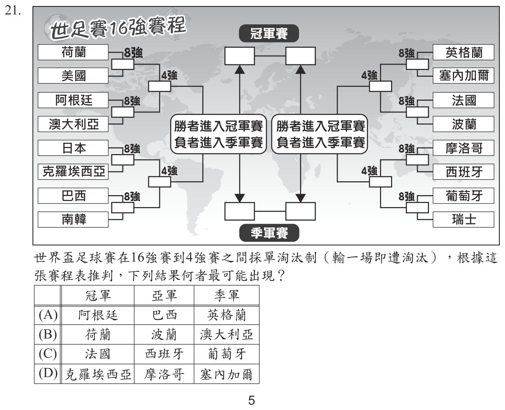
本題選項為上圖中的 A／B／C／D，請對照圖片作答。
答案：（D）
詳解與考點
正解：單淘汰賽中，冠、亞軍必須分屬左右兩半區並各自連勝至決賽，季軍則是準決賽敗者之一。D 所列冠軍克羅埃西亞、亞軍摩洛哥分居不同半區，季軍塞內加爾可作為另一場準決賽敗者，賽程路徑相容，故 D 為正解。
A：依賽程表核對隊伍所在半區與交手輪次，所列結果無法同時成立，錯誤。
B：依賽程表核對隊伍所在半區與交手輪次，所列結果無法同時成立，錯誤。
C：依賽程表核對隊伍所在半區與交手輪次，所列結果無法同時成立，錯誤。
本題考點：單淘汰賽程判讀——冠、亞軍須由不同半區晉級決賽，季軍須為準決賽敗者；作答時依賽程位置推演，不可憑隊名強弱臆測。
第 22 題
安邑里巷口有賣餅者，吾每早過戶，未嘗不聞其歌。一日，召之與語，貧窘可憐。因與萬錢，令多其本，日取餅以償之。欣然持錢而去。後過其戶，則寂然不聞謳歌之聲。及呼乃至，謂曰：「爾何輟歌之遽乎？」曰：「本流既大，所謀益增，不暇唱曲矣。」關於文中的「吾」與賣餅者，下列敘述何者最恰當？
- （A）「吾」喜歡吃賣餅者的餅，日日光顧
- （B）賣餅者生意資本擴增後，工作更繁忙
- （C）「吾」喜歡賣餅者的歌聲，勸他以此招攬生意
- （D）賣餅者經濟狀況改善之後，就不想再繼續賣餅
答案：（B）
詳解與考點
正解：題幹要依人物言行判斷；賣餅者獲萬錢後「令多其本」，又說「本流既大，所謀益增，不暇唱曲」，表示資本擴增、生意更忙，故 B 為正解。
A：「吾」是每日經過賣餅者的門前而聽見歌聲，並非日日買餅，錯誤。
C：「吾」只問賣餅者為何突然停止唱歌，沒有勸他用歌聲招攬生意，錯誤。
D：賣餅者是因工作繁忙而無暇唱歌，並非不想繼續賣餅，錯誤。
本題考點：文言人物行為理解——把關鍵語句換成白話後，再判斷因果；「本流既大、所謀益增」表示資本與經營規模增加，「不暇」表示沒有時間。
第 23 題
「令遠方之卒守塞，一歲而更，不知胡人之能。不如選常居者家室田作，且以備之，以便為之高城深塹。先為室屋、具田器，乃募民免罪、拜爵，予冬夏衣、廩食，能自給而止。塞下之民，祿利不厚，不可使久居危難之地。胡人入驅而能止其所驅者，以其半予之。如是則邑里相救助，赴胡不避死，全親戚而利其財也。此與遠方之戍卒，不習地勢而心畏胡者，功相萬也。」關於文中「遠卒守塞」、「募民屯戍」的比較，下列何者最恰當？
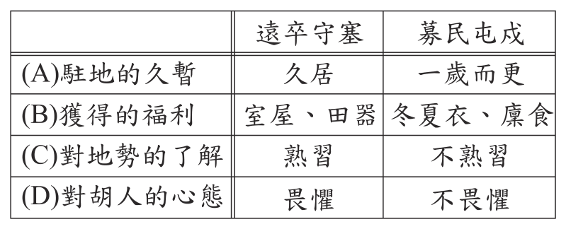
本題選項為上圖中的 A／B／C／D，請對照圖片作答。
答案：（D）
詳解與考點
正解：題幹比較遠卒守塞與募民屯戍，文中明示遠卒「不習地勢而心畏胡」，屯民則久居當地、為保全親戚與財物而「赴胡不避死」。D 正確呈現遠卒不熟地勢且畏敵、屯民熟悉當地且不畏敵的對比，故 D 為正解。
A：遠卒是一歲而更，屯民是久居當地，選項把久暫關係顛倒，錯誤。
B：依本文比較，兩者的福利安排與身分條件不可互相張冠李戴，錯誤。
C：依本文比較，熟悉地勢的是久居的屯民，不是遠方戍卒，錯誤。
本題考點：文言比較表判讀——先分別整理兩方的任期、地勢熟悉度、動機與畏敵程度；對比判準——遠卒一年輪替且不習地勢，屯民久居而為保家財願意抗敵。
第 24 題
「世傳《碧雲騢》一卷為梅聖俞作，皆歷詆慶曆以來公卿隱過，雖范文正亦不免。議者遂謂聖俞游諸公間，官竟不達，懟而為此以報之。君子成人之美，縱使萬有一不至，猶當為賢者諱，況未必有實。聖俞賢者，豈至是哉？後聞之，乃魏泰所為，嫁之聖俞也。此豈特累諸公，又將以誣聖俞？歐陽文忠《歸田錄》自言不記人之過惡，君子之用心當如此也。」下列何者最符合本文的觀點？
- （A）范文正也曾揭發公卿的過錯
- （B）《碧雲騢》應非梅聖俞所作
- （C）魏泰因官運不亨而怨懟梅聖俞
- （D）《歸田錄》反對替賢者隱諱的筆法二、題組：（25 ～ 42題）請閱讀以下短文，並
答案：（B）
詳解與考點
正解：本文先述《碧雲騢》被誤傳為梅聖俞所作，後明說「乃魏泰所為，嫁之聖俞也」。因此此書應非梅聖俞所作，故 B 為正解。
A：范文正是書中「亦不免」遭詆毀的人，不是揭發公卿過錯的人，錯誤。
C：文中遭嫁禍、被誣者是梅聖俞；不能推成魏泰因官運不亨而怨懟梅聖俞，錯誤。
D：《歸田錄》主張不記人之過惡，正支持為賢者隱諱，不是反對，錯誤。
本題考點：文章論點把握——結論須抓作者最後揭示的事實與評語；人物關係判準——魏泰是作者且嫁禍者，梅聖俞是被誣者，范文正是被詆毀者。
第 25 題
根據本文，下列關於公呆的敘述何者最恰當？
- （A）若移至深海生活，可以延長生命
- （B）噴水嚇阻敵人，反而暴露藏身處
- （C）閉殼後像石頭，碰撞也不易破損
- （D）群體死亡前，會一起躺平晒太陽
答案：（B）
詳解與考點
正解：題幹問公呆的特性，應以文本明示的行為作答。公呆遇動物接近會一起噴水警示，雖可能嚇走水鳥，卻讓人發現位置，因此 B 正確。
A：文中說公呆若像「明」一樣活在冰冷的北極深海，應該受不了，不能延長生命，錯誤。
C：閉殼後像石頭、碰撞不易破損的是文蛤；公呆殼薄，用兩根手指一捏就碎裂，錯誤。
D：公呆秋天變冷時會成群死亡；「躺平晒太陽」是外孫對其生活姿態的詮釋，不是死亡前一起進行的行為，錯誤。
本題考點：文章細節理解——生物特性須逐句回扣文本；對象辨識判準——文蛤與公呆的殼厚薄不同，不能把他物特性移到公呆身上。
第 26 題
關於本文的寫作分析，下列何者最恰當？
- （A）以祖孫對話暗示不同世代價值觀的差異
- （B）以作者童年拾蛤經驗抒發對親人的懷念
- （C）藉北極圓蛤明彰顯生態永續發展的重要
- （D）藉公呆的形象比喻活到老學到老的態度
答案：（A）
詳解與考點
正解：題幹要分析全文寫作手法；文章由外孫談北極圓蛤「明」、外婆談童年挖公呆，並以對話呈現環保世代與勞動世代的不同理解與價值觀，故 A 為正解。
B：作者回憶的是昔日勞動生活與挖公呆經驗，沒有抒發對親人的懷念，錯誤。
C：生態永續是外孫提出的抗議之一，不是全文藉「明」所彰顯的主旨，錯誤。
D：公呆的形象用來連結躺平現象與不同處境，不是比喻活到老學到老，錯誤。
本題考點：散文寫作手法——觀察敘述者、對話安排與前後對照如何服務主旨；主旨判準——局部人物意見不可直接當成全文唯一主旨。
第 27 題
小原根據本文與圖(一)畫了一張灰面鵟鷹遷徙路線圖，如圖(二)。小嵐認為小原在圖中標示的遷徙路線有疏漏和錯誤，他提出了下列說法。對照本文後，何者可以成立？圖(一)
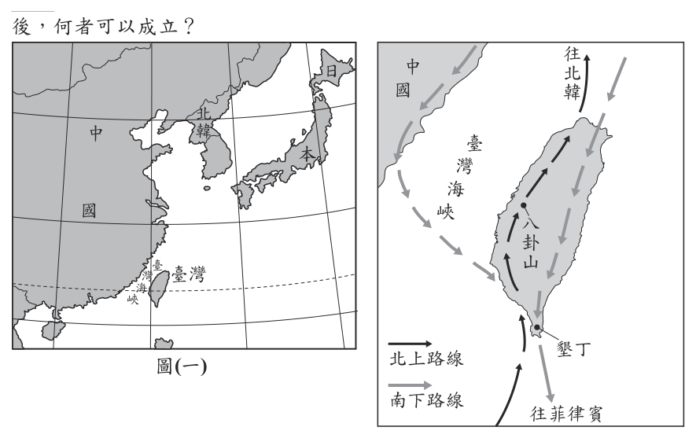
- （A）北上的路線應該在臺灣南部出海
- （B）北上的路線少畫了經由蘭嶼的這條
- （C）南下的路線不應該經由墾丁出海
- （D）南下的路線少畫了從中國來的這條圖(二)
答案：（B）
詳解與考點
正解：題幹要以本文補正遷徙路線圖；春季北遷的一條路線是從臺灣東南外海的蘭嶼，經琉球北上回日本。圖（二）北上只畫經八卦山往北的一條，漏畫經由蘭嶼的路線，故 B 為正解。
A：本文未說北上路線應在臺灣南部出海；蘭嶼路線是由臺灣東南外海經琉球北上，錯誤。
C：本文明說灰面鵟鷹南下時經過墾丁，不能刪除墾丁出海的路徑，錯誤。
D：南下是從日本、西伯利亞或中國東北而來，經墾丁前往菲律賓；選項把方向說成「從中國來」的漏線，不合本文與圖示判讀，錯誤。
本題考點：文圖對照——先分辨南下、北返的季節與方向，再逐條核對起點、途經地與終點；北返判準——除西岸路線外，還有蘭嶼經琉球回日本的路線。
第 28 題
根據本文，八卦山成為灰面鵟鷹重要休息站的原因，最可能是下列何者？
- （A）林相完整，雨量豐沛
- （B）地形獨特，容易識別
- （C）食物豐富，地形適合
- （D）氣候溫暖，適合繁殖
答案：（C）
詳解與考點
正解：題幹問八卦山成為重要休息站的原因，關鍵是文本明列的兩項條件：次生林提供豐富食物，山脈地形提供上升氣流。C 同時符合兩項訊息，故 C 為正解。
A：文中沒有提到林相完整或雨量豐沛，錯誤。
B：文中強調地形能提供上升氣流，沒有說八卦山容易識別，錯誤。
D：文中說灰面鵟鷹回到日本等地繁殖，八卦山是遷徙休息站，不是繁殖地，錯誤。
本題考點：關鍵訊息篩選——原因題須選齊文本列出的必要條件；休息站判準——食物來源豐富加上地形形成上升氣流，才能支持猛禽遷徙停留。
第 29 題
根據甲文，關於劇本的創作，下列敘述何者最恰當？
- （A）增加對白的比例可讓電影更有視覺效果
- （B）要看懂電影必須先學習視覺化寫作的技能
- （C）視覺化寫作可讓讀劇本的人較容易掌握情境
- （D）希區考克認為視覺化寫作是劇本最重要的部分
答案：（C）
詳解與考點
正解：甲文定義視覺化寫作為對白以外、用文字勾勒圖像的視覺描述，能創造真實世界並使劇本有生命。因此它可讓讀劇本的人較容易掌握場景與人物情境，故 C 為正解。
A：視覺化寫作強調對白以外的視覺描述，增加對白比例不會使電影更有視覺效果，錯誤。
B：視覺化寫作是創作者用於劇本的技能，觀眾看懂電影不必先學習，錯誤。
D：希區考克說的是偉大電影需要劇本、劇本、劇本，甲文沒有說他認定視覺化寫作是劇本最重要的部分，錯誤。
本題考點：說明文主旨擷取——先掌握術語的定義，再找其功能；視覺化寫作判準——以場景外觀、場景事件、角色外貌與角色行動等描述，幫助讀者形成畫面並理解情境。
第 30 題
關於乙劇本的寫作分析，下列何者最恰當？
- （A）透過極簡的對白讓事件留有餘韻
- （B）藉「關上」一詞讓角色間有衝突
- （C）以節拍器故障凸顯角色性格的偏執
- （D）用狀聲詞「喀啦」製造情節的轉折
答案：（D）
詳解與考點
正解：乙劇本中「喀啦」後鼓棒斷成兩半；狀聲詞使全力擊鼓的過程突然中斷，帶出角色停下、疲憊的情節轉折。D 正確。
A：乙文幾乎沒有角色對白，不能說透過極簡對白留下餘韻。
B：「關上」是安德魯關閉節拍器的動作，文中沒有角色間衝突。
C：發生斷裂的是右鼓棒，不是節拍器故障；節拍器仍在嗶嗶作響。它看起來對，是因為節拍器反覆出現，但文句並未寫它故障。
本題考點：劇本視覺化寫作——聲音、動作與物件變化都能推進情節；判斷寫作效果時，要扣住前後事件的轉變，不可把反覆出現的物件誤認為故障原因。
第 31 題
乙劇本畫線處的文句，最無法呼應甲文中哪一項視覺化寫作的要素？
- （A）場景外觀
- （B）場景事件
- （C）角色外貌
- （D）角色行動請閱讀以下短文，並
答案：（C）
詳解與考點
正解：題幹要求找畫線文句最無法呼應的視覺化要素。文句寫練習室陰暗狹小、節拍器閃爍與鼓棒斷裂，也寫安德魯擊打、調整節拍器；唯獨沒有寫人物的長相、衣著或神情，所以 C「角色外貌」最無法呼應。
A：陰暗狹小的練習室及銀灰色譜架，屬場景外觀。
B：節拍器閃爍、鼓棒斷裂，是場景中發生的事件。
D：試著打出雙跳、重新設定節拍器及繼續打擊，都是角色行動。
本題考點：視覺化寫作要素——場景外觀寫地點樣貌，場景事件寫周遭發生的事，角色外貌寫人物外觀，角色行動寫肢體作為；「汗流浹背」是當下狀態，不等同於角色外貌描寫。
第 32 題
根據本文，那些人不停追問他人到底賺多少錢，其原因最不可能是下列何者？
- （A）對貧窮的恐懼
- （B）對未來想像的單一
- （C）重視良好的生活品質
- （D）認為工作的意義只在金錢
答案：（C）
詳解與考點
正解：「最不可能」，應找與本文明說內容相反的原因。文中指出這些人「並不關切生活品質」，故 C「重視良好的生活品質」最不可能。
A：開頭說社會非常擔心沒有錢，可支持對貧窮的恐懼。
B：他們只用金額衡量未來，忽略多種無形價值，顯示對未來想像單一。
D：他們一心比較金額，將工作與人生價值放在金錢天秤上衡量。
本題考點：論說文推論——遇到「最不可能」先找文本的否定句或矛盾資訊；作者批評只以金額比較人生、忽略生活品質與自我實現的價值觀。
第 33 題
根據文意脈絡，畫線處文句的涵義，與下列何者最接近？
- （A）充分的實現自我
- （B）不再與他人比較
- （C）賺取足夠的金錢
- （D）犧牲已到達極限
答案：（D）
詳解與考點
正解：畫線句列出自我、夢想、健康、幸福、信念被出賣，重點是無形代價累積到不得不喊停的程度。D「犧牲已到達極限」最接近其涵義。
A：文中列舉的是被出賣的自我與夢想，不是充分實現自我。
B：文中批評與他人比較金額，畫線句並非指停止比較。
C：金額是否「夠」難以決定，畫線句轉而強調犧牲的代價，不是賺到足額金錢。它看起來對，是因為句中有「夠」，但此處的「夠」指代價已不能再承受。
本題考點：語境釋義——解讀關鍵詞要連結前後文；同一個「夠」在本文先涉及金額標準，後則以自我、健康等無形犧牲說明應停止的界限。
第 34 題
根據本文，下列店家的說明何者最不可能是「縮水式漲價」？
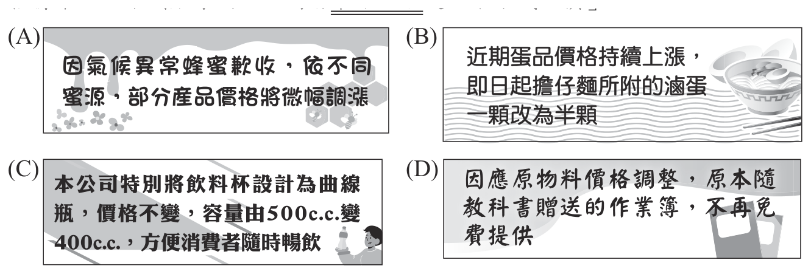
本題選項為上圖中的 A／B／C／D，請對照圖片作答。
答案：（A）
詳解與考點
正解：題幹的關鍵在於「價格不變、分量減少」才是縮水式漲價；A 是因蜜源歉收而微幅調漲價格，屬公開直接漲價，價格已改變，故最不可能是縮水式漲價。
B：滷蛋由一顆改為半顆，售價不變而分量減少，符合縮水式漲價。
C：容量由 500c.c. 減為 400c.c.，若價格不變即為分量減少，符合縮水式漲價。
D：取消原有免費贈品，消費者以同樣價格取得的內容減少，符合縮水式漲價。它看起來不像漲價，是因為商品標價未變，卻忽略了贈品也是原先交易內容的一部分。
本題考點：縮水式漲價——判斷時同時檢查價格與消費者實得內容，價格不變而數量減少或品質下降即屬之；直接漲價——標價上升而內容未縮減，不屬縮水式漲價。
第 35 題
根據本文，消費者對企業選擇的「另一條路」較不抗拒的原因，最可能是下列何者？
- （A）較可感受廠商回饋的誠意
- （B）較符合實際上的使用需求
- （C）較能與同類產品產生區隔
- （D）較難直觀察覺價格的改變
答案：（D）
詳解與考點
正解：企業用小包裝或搭售走「另一條路」後，消費者為何較不抗拒。本文明說消費者不易與原先價格比較，因此較難直觀察覺價格改變，D 正確。
A：文中沒有提到廠商回饋或誠意。
B：文中沒有以實際使用需求解釋。
C：文中沒有說此作法是為了與同類產品區隔。
本題考點：說明文訊息推論——原因須由文本的因果鏈推出；小包裝與搭售使原價不易比較，因而緩和消費者抗拒購買的心理。
第 36 題
關於文中新、舊《五代史》對南唐君主的記載，下列敘述何者最恰當？
- （A）《舊五代史》記錄李昪，是因為認同他的正統地位
- （B）新、舊《五代史》都不肯承認南唐君主的帝王身分
- （C）南唐君主在《舊五代史》的定位比在《新五代史》高
- （D）《新五代史》不承認北方政權，故未提及李後主入宋
答案：（B）
詳解與考點
正解：兩部史書如何定位南唐君主。《舊五代史》把十國稱帝者列入「僭偽列傳」，《新五代史》僅列「世家」而非帝王的「本紀」，都不承認南唐君主的帝王身分，故 B 正確。
A：記錄李昪不表示認同其正統地位；《舊五代史》仍以「僭偽」定位。
C：「僭偽列傳」的貶抑比「世家」更重，南唐在《舊五代史》的定位不是較高。
D：文中說《新五代史》提及李後主，只是不寫其入宋部分；原因是正統史觀，非不承認北方政權。
本題考點：史書體例與立場——「本紀」用於帝王，「世家」低於本紀；閱讀史料時，要由「僭偽」、「世家」等體例判斷史家對政權正統性的定位。
第 37 題
根據本文，下列何者最接近作者的觀點？
- （A）應該重視王朝興替的「正統情結」
- （B）北方政權相對穩定，有利於人文建設
- （C）肯定李氏三代重視文教，對文化的貢獻
- （D）趙匡胤借「陳橋兵變」稱帝，是為僭越
答案：（C）
詳解與考點
正解：題幹問作者觀點，應由全文的評價語氣判斷。文末感嘆汴京的文化資產多來自南唐，全文肯定李氏三代重視文教及其文化貢獻，故C為正解。
A：作者批評王朝興替中的正統情結造成史書偏頗，並非主張應重視它，錯誤。
B：文中明說北方政權朝廷難有建樹，並未認為其相對穩定有利人文建設，錯誤。
D：作者是在描述史家對陳橋兵變的觀點，沒有認定趙匡胤稱帝為僭越，錯誤。
本題考點：作者觀點推論——從全文的褒貶語氣與結論句歸納立場；選項比對——分辨作者自己的主張、作者轉述的史家觀點，以及作者所批評的觀點。
第 38 題
下列何者最可能是文中人物的親屬關係示意圖？
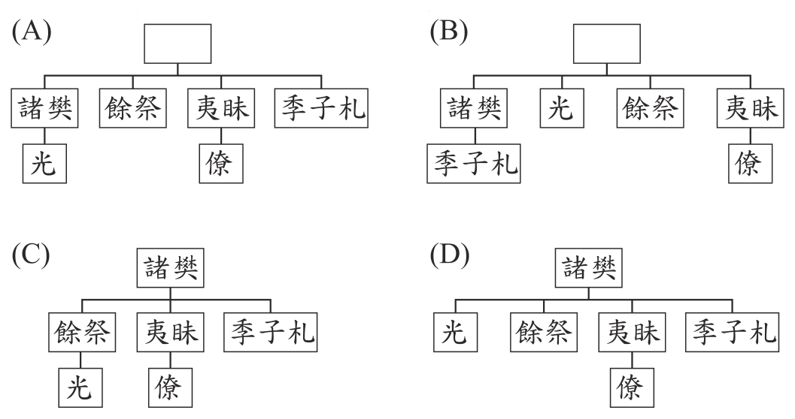
本題選項為上圖中的 A／B／C／D，請對照圖片作答。
答案：（A）
詳解與考點
正解：題幹要依敘事還原親屬關係。諸樊下有餘祭、夷眛、季子札三弟，四人同輩；公子光是諸樊之子，僚是夷眛之子，兩人屬下一輩。A 呈現四兄弟並列、光屬諸樊、僚屬夷眛，故 A 為正解。
B：將兄弟與子輩的關係錯置，故錯誤。
C：誤把諸樊當成四人的父親；文中明說餘祭、夷眛、季子札皆為諸樊之弟，故錯誤。
D：同樣誤把諸樊當成四人的父親，故錯誤。
本題考點：文意統整——依稱謂與「弟」「子」還原世代關係；判準——先排出同輩兄弟，再將「某人之子」置於其下一代。
第 39 題
根據本文，公子光最無法接受誰擔任吳王？
- （A）餘祭
- （B）夷眛
- （C）季子札
- （D）僚
答案：（D）
詳解與考點
正解：題幹要依公子光提出的兩套繼承邏輯判斷。若按兄弟次序，應立季子札；若按父子次序，公子光自稱真嫡嗣，兩種說法都排除夷眛之子僚，因此 D 為正解。
A：餘祭是諸樊死後依兄弟次序繼位者。
B：夷眛也是依兄弟次序繼位者。
C：季子札正是公子光在兄弟繼承邏輯下承認的應立人選。
本題考點：文言文訊息推論——先還原人物明示的判準，再比較各人是否符合；兄終弟及與父子嫡嗣兩種標準雖不同，本文都不能導出僚的繼位正當性。
第 40 題
根據文意脈絡，下列「」中的詞語，何者替換後意義仍相同？
- （A）日前「令郎」訪逮：令尊
- （B）「比來」，數於都下朋從處見此屏：近來
- （C）豈意「一旦」不煩懇請：剎那
- （D）「俗故」忽忽：老友
答案：（B）
詳解與考點
正解：詞語替換後意義是否不變。「比來」用在「數於都下朋從處見此屏」之前，表示最近一段時間，與「近來」相同，故 B 正確。
A：「令郎」是對方的兒子，「令尊」是對方的父親，所指不同。
C：「一旦」在此是某天忽然、意外地，不是短暫的一剎那。
D：「俗故」指世俗事務、俗務，不是老友。
本題考點：文言詞義辨析——替換詞須在原句語境中比較所指與意思；敬稱要分清對方之子「令郎」與對方之父「令尊」，時間詞「比來」則表近來。
第 41 題
關於文中的石月屏，下列敘述何者最恰當？
- （A）若不是薛虢州贈送石月屏，司馬光無從見其真貌
- （B）石月屏雖比文錦、白璧昂貴，但司馬光更重友情
- （C）司馬光初獲石月屏時雖心喜，當下仍堅守節操婉拒
- （D）石月屏自然生成，清氣可見，因此司馬光甚為喜愛
答案：（D）
詳解與考點
正解：文中稱石月屏「天質圓瑩，非刻非繪，如秋高氣清」，說明它自然生成、澄澈清朗；又寫「素心悅之」，可知司馬光十分喜愛。D 最恰當，故選 D。
A：司馬光說曾「數於都下朋從處見此屏」，早已多次見過，不是受贈才見真貌。
B：文錦、白璧用以對照司馬光的個人好尚；即使收到昂貴的文錦、白璧，對他也不算重賜，不能據此判定石月屏較昂貴或司馬光更重友情。
C：文中說「坐致握中」，表示已收下贈品；沒有婉拒。
本題考點：文言文細節理解——以原文關鍵語句對照選項；「非刻非繪」指自然生成，「素心悅之」表喜愛，「握中」表已收受，不能超出文意推論。
第 42 題
根據本文，下列何者最可能是司馬光收下石月屏後的反應？
- （A）欲登門回禮，惜薛公務繁忙，擬另擇日造訪
- （B）獲贈禮物，喜出望外，故寫信向薛表達謝意
- （C）受薛贈寶深感有愧，已經備好厚禮回贈致謝
- （D）為辨優劣，邀請好友來家中共同鑑賞石月屏
答案：（B）
詳解與考點
正解：收下石月屏後最可能的反應。題名是〈答薛虢州謝石月屏書〉，內文又說「久不遑修謝」，可知司馬光獲贈後喜出望外，寫信向薛氏致謝，B 最合理。
A：文中未說司馬光想登門回禮，也未說薛氏公務繁忙。
C：文中雖說「愧喜」，但沒有已備厚禮回贈的資訊。
D：文中提到曾在朋友處見過石月屏，未說收下後邀友共同鑑賞。
本題考點：書信文意推論——要以題名與信中明示語句為依據；「修謝」指作書致謝，不能自行補入登門、回贈或邀友等情節。
其他年度
回到國中教育會考國文的年度總覽，
或到國中教育會考題庫首頁看其他科目。
題目與標準答案出自心測中心 會考歷屆試題（依著作權法 §9，考試試題不受著作權保護）。依中華民國《著作權法》第 9 條第 1 項第 5 款，
依法令舉行之各類考試試題不得為著作權之標的，得自由利用。詳解為 AI 整理的學習輔助，
並非官方標準答案；中華民國會修訂，引用前請對照現行版本查證。